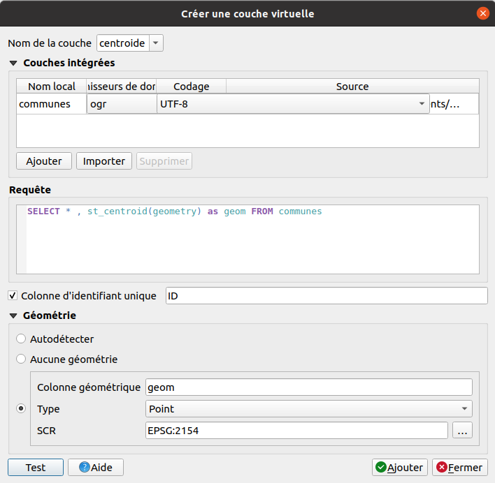
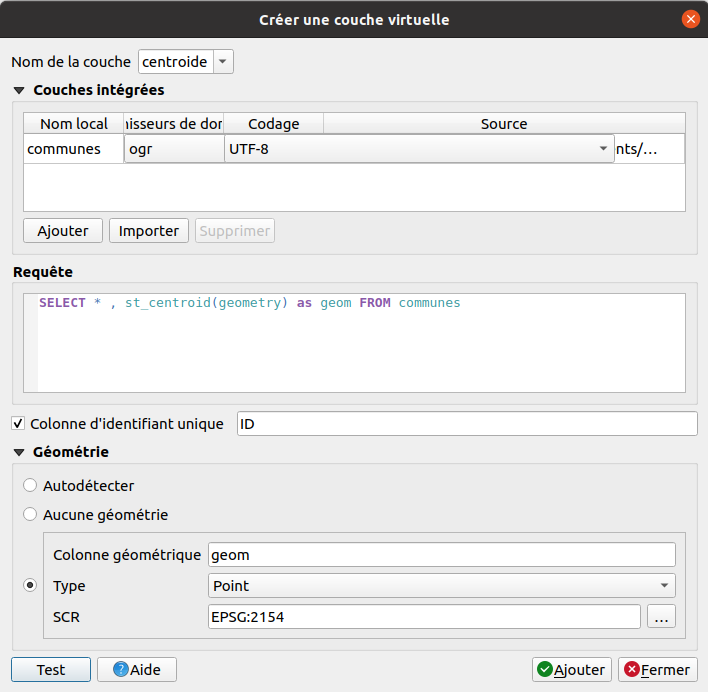

Table of content
Faire une couche virtuelle
À partir de la couche commune, surfacique, nous souhaitons obtenir une couche ponctuelle.
Requête SQL :
SELECT * , st_centroid(geometry) as geom FROM communes

À partir de la couche commune, surfacique, nous souhaitons obtenir une couche ponctuelle.
Requête SQL :
SELECT * , st_centroid(geometry) as geom FROM communes
